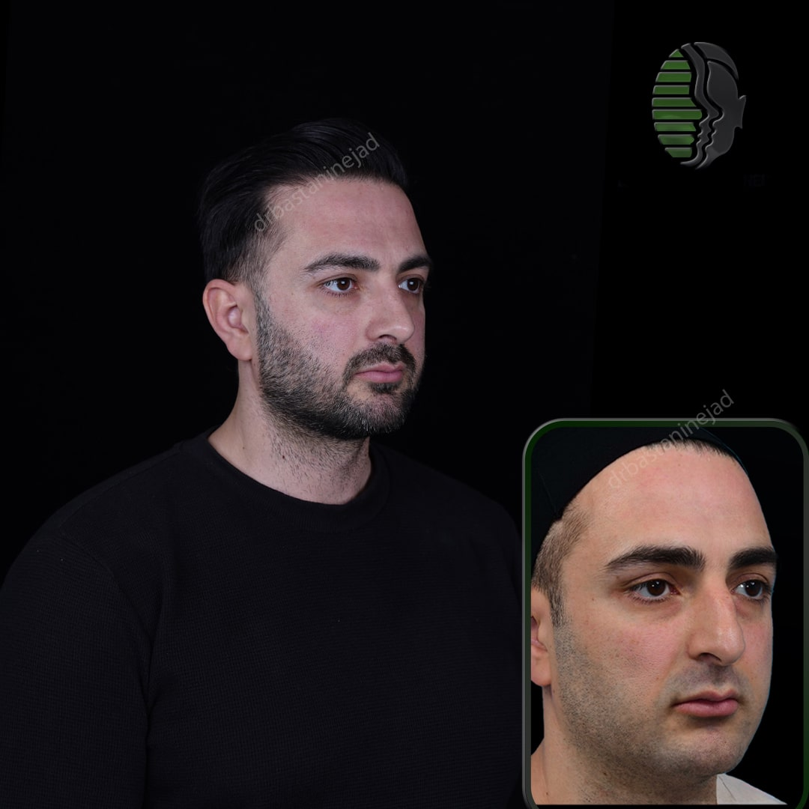

جراحی بینی یا رینوپلاستی یکی از محبوبترین جراحیهای زیبایی در سراسر جهان است که با هدف بهبود ظاهر و عملکرد بینی انجام میشود. این جراحی میتواند به دلایل زیبایی، مانند تغییر شکل و اندازه بینی، یا به دلایل پزشکی، مانند اصلاح مشکلات تنفسی، انجام شود. در این مقاله از دکتر شاهین باستانی نژاد، به بررسی جامع جراحی بینی، انواع آن، و نکات مهم قبل و بعد از عمل میپردازیم.